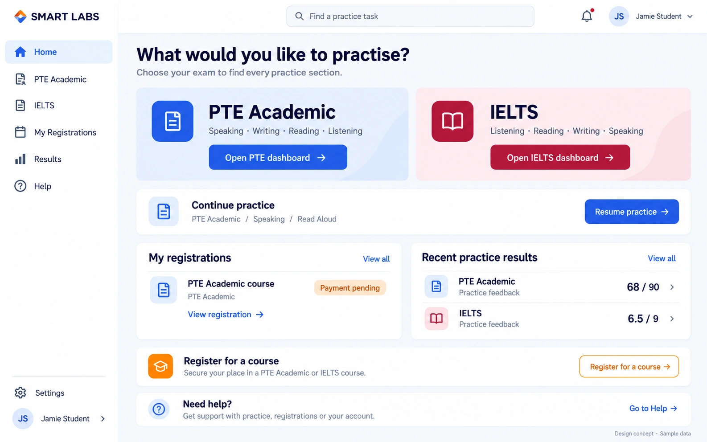

01 · Student Home
Two clear exam entrances
Give PTE Academic and IELTS equal prominence. Keep registration status and recent practice results below them, rather than mixing every practice task into one long dashboard.
Open full-size design